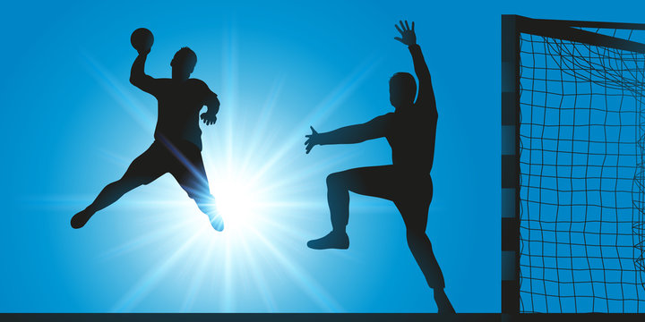

History of Handball
Modern team handball was developed in Europe in the late 19th century. The first official games were played in Germany and Denmark. It became an Olympic sport in 1936 (outdoor) and 1972 (indoor).
Rules & Equipment
- Two teams of 7 players each (6 court players + 1 goalkeeper)
- Played on an indoor court with goals at each end
- Players pass and dribble the ball to score by throwing it into the opponent’s goal
- Matches consist of two 30-minute halves
- Goalkeepers can use any part of their body to block shots
Major Handball Competitions
- Olympic Games
- IHF World Handball Championship
- EHF European Championship
- Handball Bundesliga (Germany)
- Champions League (Europe)
Famous Handball Players
- Nikola Karabatić (France)
- Mikkel Hansen (Denmark)
- Dusebaeva Talant (Spain)
- Anja Andersen (Denmark)
- Katarina Bulatović (Montenegro)
Benefits of Playing Handball
- Boosts cardiovascular endurance
- Improves coordination and reflexes
- Enhances teamwork and tactical awareness
- Builds muscular strength and speed
- Fun, competitive, and fast-paced activity
Global Popularity
Handball is especially popular in Europe, with strong leagues in Germany, France, and Scandinavia. The sport is also growing in Asia and South America through youth development and international exposure.